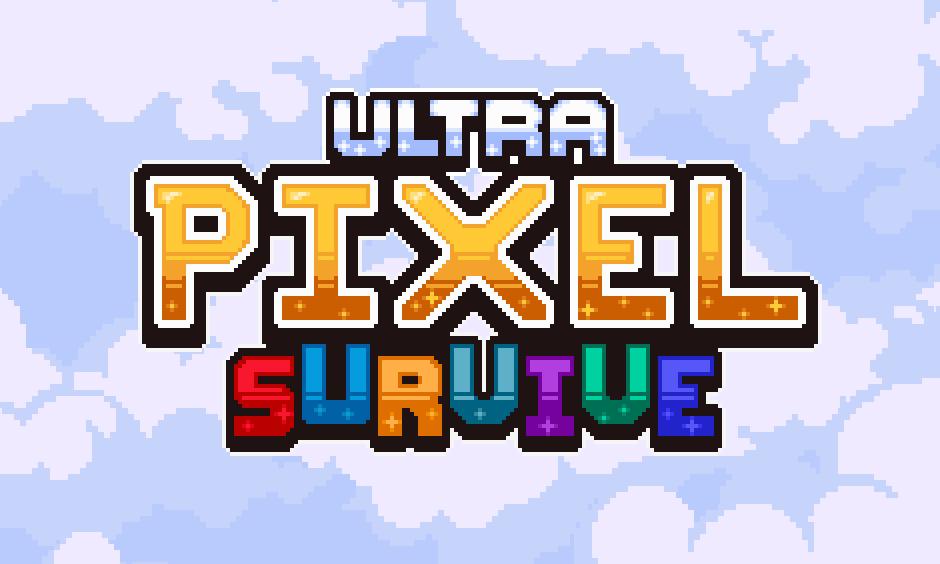

🮠Naka Gamedev — Jogos feitos por um jogador!
Seja bem-vindo à página oficial do desenvolvedor Naka!
Aqui você encontra informações sobre meus jogos e projetos em andamento.
🕹️ Sobre o jogo: Ultra Pixel Survive

Ultra Pixel Survive é um jogo que mistura RPG de ação e sobrevivência em um mundo retrô com arte em pixel...
✨ Principais recursos:
- ğŸ Construção e evolução de base
- 🛡️ Defesa da vila com torres e armadilhas
- 🌾 Agricultura, caça e culinária
- 🔓 Sistema de progressão com heróis únicos
- 🲠Batalhas contra chefes em um mundo de fantasia épica
- 🧩 Estilo visual em pixel art nostálgico
Se você curte jogos indie com desafio e personalidade, Ultra Pixel Survive é feito pra você.